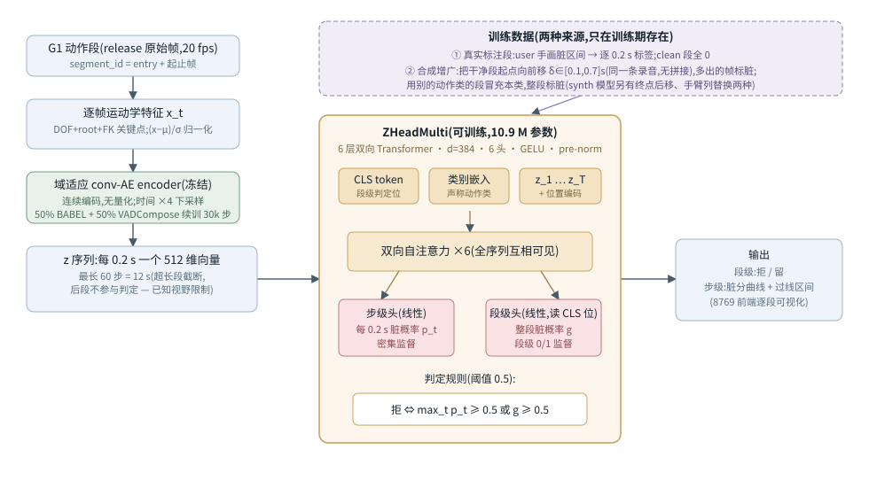

Generated from Markdown source: report/G1_MotionGPT/2026-08-14-zhead-design-augmentation-training.md
G1 MotionGPT 判定线 — z-head 判定器的架构、数据增广与训练细节
设计文档 + 现状汇总。解释当前判定主干 z-head(代码类名 ZHeadMulti)的架构、两类训练数据的
构造方式和训练配方,并汇总它在三个评测集上的实测结果;开头先说明为什么放弃 MotionGPT 的
语义对齐结构。
Conclusion
FAIL(按"能否直接上岗清洗 28k train 池"判:当前版本不能——污染抓得住,干净留不住)
- 旧结构的瓶颈已定位并绕开:判别信息在连续特征里是活的(线性探针 AUC 0.80),VQ 量化后只剩 0.55–0.67(背景);z-head 直接消费量化前的连续编码。
- 污染召回率在三个评测集上均为 87–100%(主表),拒的能力不缺。
- 主要失败面是干净召回率(9%–38%):模型大面积拒绝真干净段;kick 在 half-B 上 65 段全拒, 与训练集里只有 1 段干净 kick 共现。
- 当前决定(user 已确认):从 28,081 段无人审查的 train 池随机抽样,按"先测后训"滚动补充 user 标注;round-1 walk 已完成,acc 0.842(主表)。
Problem and terminology
研究问题:z-head 的设计、增广与训练是什么;它当前在"给定声称动作类,判这段是否干净"任务上 测到什么水平,失败集中在哪。
背景——为什么 MotionGPT 的语义对齐结构一直上不来(约 130 字):判定要用的信息一直都在: 直接在连续运动特征上训线性分类器分辨干净/污染,AUC 0.80;但 MotionGPT 的入口是 VQ 量化 码字,同一探针在码字上只剩 0.55–0.67——量化这一步先丢掉大半判别信息。T5 语言模型的训练 目标又只有动作命名/文本对齐,pass/fail 判定从未进入它的损失。两层损耗叠加,判定准确率长期 停在 0.6 附近,换提示词、扩码本(512→2048)、上强化学习都没突破。
| Term | 本文 operational definition | Scope / not to confuse with |
|---|---|---|
| z-head | 判定模型代号(代码类 ZHeadMulti):冻结连续编码器 + 可训练 6 层双向 Transformer(d=384,6 头,10.9 M 参数),输出逐 0.2 s 污染概率和整段污染概率;"z"指编码器输出的连续向量 |
不输出动作名;判定相对输入的"声称动作类"进行 |
| 域适应 conv-AE | 卷积自编码器:逐帧特征 → 每 0.2 s 一个 512 维连续向量(时间 ×4 下采样,不做向量量化);先在 BABEL 训练,再用 50% BABEL + 50% VADCompose 混合窗口继续训 30k 步;判定训练与推理全程冻结 | VQ 分词器(离散码字)是 MotionGPT 线部件,不在本线 |
| 步级头 / 段级头 | 两个线性输出层:步级头对每个 0.2 s 向量给污染概率,由标注时间区间逐步监督;段级头读 CLS 位给整段污染概率,只有段级 0/1 监督 | 判定规则:任一步 ≥0.5 或 段级 ≥0.5 → 拒 |
| synth 模型 | ckpt logs/g1_motiongpt/zhead_multi_synth:训练数据全部为合成样本(材料 = V3 审查判净的段),不含任何真实污染段 |
本文对照方 |
| hans-only 模型 | ckpt logs/g1_motiongpt/zhead_hansonly:训练数据只有 user 在 8769 队列标注的 57 段(44 污染含手画时间区间 + 13 干净)加由这 13 段生成的 29 条合成样本,共 86 条 |
与 hans-57 交叉验证同配方,但用全部 57 段训练 |
| hans-57 交叉验证 | 上述 57 段做 5 折交叉验证:每折用其余 4 折训练,预测留出折;标签与训练同出 user 一人 | 该评测集与训练数据同队列、同标注人,数字不能外推到其他分布 |
| half-B | train split 按录音条目分组对半后留作评测的一半(seed 20260812,885 段),本文取其中 walk/kick/wave_arms 232 段;两个模型的训练都没碰过它;标签来自 V3 审查(nolan 为主,"看过但没打标"折算为 fail) | half-A 在监督池内、可用于训练 |
| 全拒基线 | 把所有段都判污染的常数判定器,准确率 = 评测集污染占比;模型准确率超出它的部分才是判别贡献 | 不是模型 |
| 先测后训 round-1 | 从 28,081 段无人审查的 train 池随机抽 20 段/类(seed 20260815);模型对这批的判定在标注前已算好存盘,user 标完后判定对错即当轮评测,标注再并入训练集 | 标注期间前端可见 z-head 面板,round-1 起评测不是严格盲测 |
| 指标 | 准确率 = 判对比例↑;污染召回率 = 真污染中被拒比例↑;干净召回率 = 真干净中被保留比例↑;保留侧精确率 = 保留段中真干净比例↑ | 四个一起看;单看准确率会被污染占比抬高 |
Method

训练数据构造(增广全部基于真实录音,不做跨录音拼接——很多动作之间有真实过渡,拼接会造出 数据里不存在的跳变):
| 合成形式 | 构造 | 标签 | 用于 |
|---|---|---|---|
| 起点前移 | 干净段起点在同一条录音里向前移 δ∈{0.1…0.7} s(每段抽 2 个 δ);多出的帧是真实前文 | 前移帧=污染,原段帧=干净 | 两个模型 |
| 跨类冒充 | 用别的动作类的干净段冒充声称类 | 整段污染 | 两个模型 |
| 终点后移 | 同起点前移,方向在段尾 | 后移帧=污染 | 仅 synth |
| 手臂列替换 | 把另一段的手臂关节列(DOF 15:29)粘进干净段中段,模拟下肢在走、上肢在做别的 | 替换区间=污染 | 仅 synth |
| 训练配方 | synth 模型 | hans-only 模型 |
|---|---|---|
| 数据 | 每类数百条合成样本,类平衡采样 | 57 真实段 + 29 合成 = 86 条 |
| 步数 | 3000,10% 留出早停(无早停实测过拟合) | 600 固定(seed 20260814) |
| batch / lr | 64 / 3e-4 | 32 / 3e-4 |
| 共同项 | AdamW(wd 0.01)、bf16、梯度裁剪 1.0、损失 = 步级 BCE + 0.5×段级 BCE、编码器冻结 | 同左 |
| Criterion | Threshold | Measured | Verdict |
|---|---|---|---|
| 可上岗清洗:污染召回且干净召回同时可用 | 两者均 ≥0.9(user 目标) | 污染召回 87–100%;干净召回 9–38% | FAIL |
Run Spec 与来源声明
NOT PREREGISTERED — z-head 设计线没有单一确认版 Run Spec。已搜索:docs/plans/、
outputs/g1_motiongpt/*/evidence.json、report/G1_MotionGPT/。逐次测量的探针级 spec
内嵌于对应 evidence 文件(路径见 Appendix);各训练/评测均由 user 在会话中逐项确认后执行
("可以的,都做了,速速开训"2026-08-14、"只用我的数据训练模型,再只用我的数据引导模型"
2026-08-14、随机抽样滚动方案 2026-08-14)。
Results
评测=全量(各评测集全部段),段级聚合,阈值固定 0.5,无逐集调参。
| 评测集(n,污染占比) | 模型 | 准确率↑ | 污染召回↑ | 干净召回↑ | 保留侧精确率↑ | 全拒基线 |
|---|---|---|---|---|---|---|
| hans-57 交叉验证(57,77%) | hans-only | 0.807 | 93% | 38% | 0.625 | 0.772 |
| 同上 | synth | 0.632 | 75% | 23% | 0.214 | 0.772 |
| half-B 三类(232,71%) | synth | 0.759 | 89% | 43% | 0.617 | 0.711 |
| 同上 | hans-only | 0.681 | 92% | 9% | 0.316 | 0.711 |
| round-1 walk(19,79%) | hans-only | 0.842 | 100% | 25% | 1/1 | 0.789 |
定位质量(模型不只给段级判定,还要指出脏在哪):
- 44 个含时间区间的污染段里,模型最高分位置落进标注区间 26/39;但"永远指段首 0.1 s"的 固定策略也命中 27/39——大部分污染本来就在段首,这个读数分不出真定位和位置习惯。
- 因果检验(把段首污染剪掉后重判):walk 4 段中 3 段警报消失,说明 walk 的段首警报跟内容走; wave_arms 7 段中 5 段照样整段拒,说明该类的拒绝与标注位置无关。
- 段级头单独误拒 1 例(round-1 walk
train:6823:步级全程 <0.02,段级 0.99);规则消融 显示去掉段级头在 round-1 walk 多留对 1 段、在 half-B walk 少抓 4 段污染,是一换一的取舍。
Analysis
- 测量:hans-57 上 0.807 只比全拒基线多判对 2 段,且评测与训练同队列、同标注人;换到 half-B(nolan 标签)后 0.681 低于全拒基线,只保留 nolan 明确点击判定的 163 段子集差距 不变(0.613 对 synth 0.706)——57 段训练目前不泛化(user 会话共识)。
- 测量:kick 在 half-B 上 65 段全拒,与训练集只有 1 段干净 kick 共现;因果归属
待验证, round-1 kick 标注(预期含约 7 段干净)并入重训后即可检验。 - 测量:wave_arms 的拒绝与标注位置无关(上节因果检验),该类当前不具备定位能力。
- next:round-1 kick/wave_arms 标注完成 → 60 段并入重训 → round-2 重抽;段级头去留在 重训后按规则消融重测再议。
Appendix
头条数字代入式与证据路径
- hans-57 交叉验证 0.807 = (41 拒对 + 5 留对)/57;
outputs/g1_motiongpt/hans_only_cv.json - half-B synth 0.759 = (147+29)/232,hans-only 0.681 = (152+6)/232;
outputs/g1_motiongpt/hans_only_vs_synth_halfb.json - round-1 walk 0.842 = (15+1)/19;
outputs/g1_motiongpt/rolling/round1_walk_scoreboard.json(19/20 段已标,train:2720未标;判定列曾被前端默认值污染,修正记录见该文件 spec 字段) - 线性探针 AUC:连续特征 0.800 / 旧 VQ-512 码字 0.554 / 判别正则 VQ-512 0.623±0.067 /
VQ-2048 0.674±0.095;
outputs/probe_tokenizer_disc_acceptance/evidence.json、outputs/probe_tokenizer_disc_cb2048_acceptance/evidence.json(部分连续编码变体的探针 为会话内联测量,未落盘,本文不引用其数字) - 定位与因果:
outputs/g1_motiongpt/hans_only_cv_curves.json(逐步曲线)、outputs/g1_motiongpt/head_crop_probe.json(剪段首重判)、outputs/g1_motiongpt/zhead_rule_decomposition.json(规则消融) - half-B 标签构成:walk 100 段污染 = 45 明确 fail + 55"看过未打标"折算(其中 38 条"看过"
记录来自 user 本人浏览);
outputs/g1_motiongpt/halfb_label_provenance.json
已知限制
- 输入截断:编码序列最长 60 步 = 12 s,超长段后段不参与判定(实测案例:kick
val:1840标注污染在 13.0–13.4 s,模型不可见)。 - round-1 起,标注前端(8769)带 z-head 面板(user 2026-08-14 指定,用于失败模式分析), 评测不再是严格盲测;各轮判定仍在标注前锁盘。
- V3 标签含"看过但没打标 = fail"的折算规则,与明确点击的 fail 可信度不同(路径见上)。
复现命令
# synth 模型(合成样本,类平衡,早停)
uv run python src/G1_Motion_GPT/train_zhead_multi.py --balanced --paste arms \
--cae logs/g1_motiongpt/continuous_vae_vadc/continuous_vae.pt --tag synth
# hans-only 模型:57 段标注 + 29 条合成,600 步(会话内联脚本,配方见本文训练表;
# ckpt = logs/g1_motiongpt/zhead_hansonly/zhead.pt)
# 前端判定面板(点开哪段现算哪段,缓存带 ckpt 版本):
PYTHONPATH=src MUJOCO_GL=egl uv run --with flask python -m VAD_evaluator.review_app.server \
--motiongpt --only-ids outputs/g1_motiongpt/fine_annotation_train_ids.txt \
--allow-review-notes --db outputs/vadcompose_motiongpt_view/fine_annotation_train.sqlite3 \
--host 0.0.0.0 --port 8769